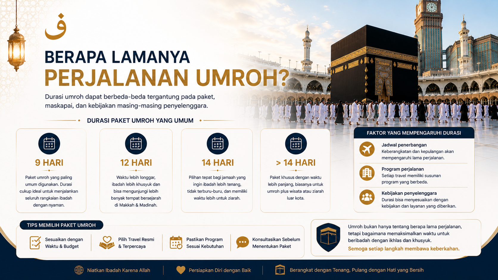

UMROH
Umroh Itu Berapa Hari? Memahami Durasi Perjalanan dan Waktu Ibadah
Memahami perbedaan antara waktu ibadah umroh dengan keseluruhan lama perjalanan agar persiapan perjalanan dapat dilakukan dengan lebih baik.
Baca Selengkapnya →